On 31 July 2022 the Lionesses made history, Chloe Kelly’s goal in extra time earning a 2-1 win over Germany to secure a first major title at Euro 2022 . The home Euros had swung the nation behind the team and women’s football has not looked back. What did the day of the final look like? Ahead of the Lionesses beginning their title defence, this is the inside story of English women’s football’s greatest day.
Waking up on the morning of the final, there was an eerie air of calm and confidence in the England camp.
Lucy Bronze, right-back: We stayed at The Lodge, at Tottenham’s training ground. It was the only night we moved hotels. The blinds were automatic and they opened on the hour, every hour, from one o’clock in the morning. So everyone came to breakfast with bags under their eyes and we were like: “Oh my God.” It wasn’t a great start. Fran Kirby was furious. She was so tired because she hadn’t had a good night’s sleep. I distinctly remember that.
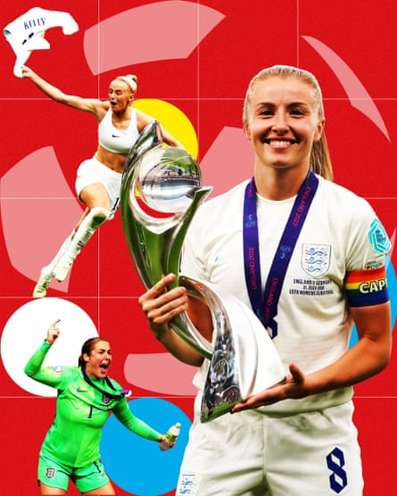Sport: Oral history of Euro 2022Composite: undefined/Guardian Design; Tom Jenkins/The Guardian; Lisi Niesner/Reuters; Daniela Porcelli/Shutterstock
Leah Williamson, captain and defender: The blinds broke, opening and closing all night, and I’m thinking: “If we lose today it’s going to be because of the blinds.” And we were at Spurs, The Lodge, I had some feelings about that.
Jorge Bronze, Lucy ’s brother: We drove down the night before and stayed in Twickenham. I have a big soccer-mom-style van, so it was me, my wife, our at the time three-year-old and one-year-old, and my mum and dad. My one-year-old, Alzira, took her first steps. That was quite an exciting start. You’re already nervous but then you’ve had this fairly big child milestone in amongst it.
Alex Greenwood, defender: If you’d have come into our camp in the morning, you’d have thought it was a day off. It was so relaxed, so chilled, you would not think we were about to play a Euro final. I’ve never felt a more confident team. I’ve never been around that before. It was quite special. Even when I went down to breakfast and I looked around the room, I was thinking: “We’re going to win today.” I could feel it. Not in an arrogant way at all, just in a really confident way.
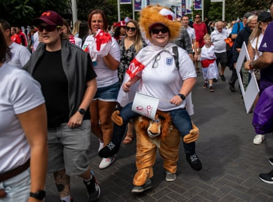Fans head to the stadium along Wembley Way.Photograph: Chris J Ratcliffe/Getty Images
Robyn Cowen, BBC commentator: Waking up, I didn’t feel nervous, I felt really calm actually. I’d done a lot of work, so I felt prepared, which is not always the case, especially after becoming a parent, trying to find that time to do all the prep, but I felt calm and confident.
Chloe Kelly, forward: I sent my family a message that said: “Let’s enjoy this special day, we don’t know how many of these moments we’ll get to spend together,” and I really remember messaging them saying: “Imagine we have another Bobby Zamora moment , but it’s me.”
Wembley Way was flooded with fans arriving at a sold-out Wembley, a record crowd for a European Championship final of 87,192 .
Williamson: I was very, very emotional, I got a text from [former Arsenal and England player] Kelly Smith, we were driving to Wembley and the helicopter was following us. It was all very exciting. I’d been very excited for every game but I was nervous for the final. When Kelly sent me, that was what set me off.
Deborah Dilworth , head of women’s football at the Football Supporters’ Association: It was the most magical day. Getting to the Wembley steps and feeling the atmosphere, wow. Not that anybody worried that there’d be the same situation as the year before [when fans without tickets forced their way into the men’s Euros final ] but it was so starkly different to feel the atmosphere, a beautiful buzz, as you went up to the stadium. There was just so much vibrancy and colour. It was like a bubbling excitement, not tension.

Fans inside Wembley stadium await kick-off.Photograph: Tom Jenkins/The Guardian
Cowen: Around 1pm I arrived. I was in a Winnebago with our team, [BBC presenter] Gabby Logan, mystic Fara Williams [who had correctly predicted England’s semi-final scoreline], Alex Scott, Ian Wright, Kelly Somers and then Rachel Brown-Finnis and a lot of the people who were looking after us, and it was weirdly calm. Rachel was your typical footballer – very superstitious. One of her superstitions was we would always have a pizza before the game, she had one before the Spain quarter-final , so she wanted one again.
Lucy Bronze: I don’t remember much until the warm-up. I can’t even remember travelling to the game. I think, when we sat on the bus, we were just kind of with each other.
Jorge Bronze: We took the family and friends bus that was put on for us, an old-school doubledecker, and it was a ridiculously hot day. It had no air-con and we were stuck in traffic for hours on the way in. There was the option of going to a little pre-party but my stomach can’t take the nerves on a day like that so we were in the stadium while it was empty, before 4pm, right behind the dugouts. We’re all in with all the other friends and family. You always know who’s friends and families because they’re wearing shirts that are too tight, because they’re wearing one of their daughter’s actual worn shirts and we’re not as fit as the players.
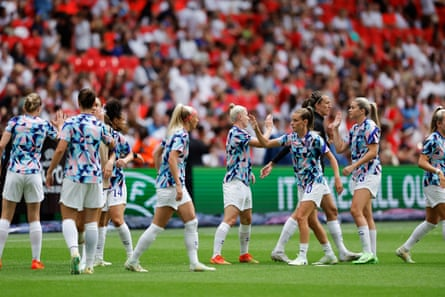England warm up before the Euro 2022 final.Photograph: Tom Jenkins/The Guardian
Akua Opong, a volunteer with the Team London Ambassadors programme : I spent much of the Euros at either King’s Cross or Piccadilly, helping fans with information to make their way across London to matches, but had an event clash as I was also volunteering at the Commonwealth Games in Birmingham. After finishing the shift I raced to find a television. I watched the final with a friend and it was chaotic. Everywhere was packed. We went from place to place looking for somewhere to watch it. We eventually ended up watching it in a Weatherspoon’s .
Sophie Downey, writer and co-founder of Girls on the Ball : It was 10 years to the day that we’d been at Wembley for Team GB against Brazil, where Steph Houghton scored to beat Brazil in front of 75,000 people at the Olympics. That was one of the real first catalysts for the growth of the game, the moment England woke up to the sport a little bit, and the game that triggered Girls on the Ball , so to be there 10 years later was incredible. The difference was stark. There was such a buzz around the place.
Just before the 5pm kick-off, news that the Germany forward Alex Popp had injured herself during the warm-up only furthered belief.
Lucy Bronze: Sat in the changing room, the big talking point was that Popp wasn’t playing . [Head coach] Sarina [Wiegman] came in and said: “Popp’s not even in the starting XI.” A huge part of our gameplan was how to stop her, but we were a bit like: “OK, it doesn’t really change much, we still have to play against good players.” That gave us a boost, though, knowing that one of the best players in the tournament wasn’t playing.
Downey: It was England v Germany and anything could happen, but when we got the news that Popp was injured I had a feeling that maybe, maybe this might be England’s time. Dilworth: As the players came out for the anthem, I just thought, whatever happens, this is an iconic moment in women’s football and I hope the players enjoy it, but equally, the fans were massive in that tournament and deserve that moment just as much as the players. I thought: “This is it, this is ours, we’re going to win.” The hope and tension at kick-off were palpable.
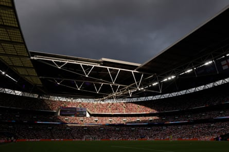A packed and expectant Wembley stadium.Photograph: Tom Jenkins/The Guardian
Cowen: Usually at Wembley, television commentators get a great view. For some reason, because it was a tournament, the broadcasters were shuffled around a bit and we were in a radio seat with a really bad view. That was my first “oh no” moment. This was a bit too low. We were also right in front of [BBC Radio] 5 Live, and because I’m very small, I have to stand up for 98% of games, but if I stood up here 5 Live couldn’t see. So I spent most of the match in a sort of half-squat position.
In the first half, Germany were aggrieved that they were not awarded a penalty for handball in 25th minute when the ball appeared to strike Williamson’s raised arm .
Williamson: I remember Rachel Daly shouting at me: “What’s the VAR check for?” I knew that it was going to be a close call. I still stand by the rules, it hit me on the top part of my arm, above my sleeve. Genuinely, after that, there’s only a couple of thoughts I remember, mainly that my c ousin was pregnant and I really hoped we wouldn’t go to penalties as I didn’t know if she was going to make it through that.
Lina Magull ’s 79th‑minute equaliser cancelled out Ella Toone’s second-half chip over Merle Frohms and forced the final into extra time.
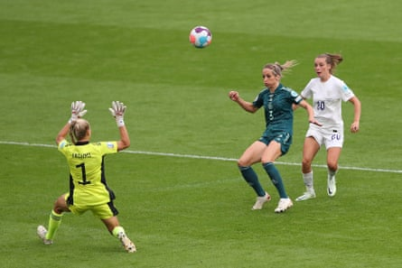Ella Toone chips Germany’s Merle Frohms to put England ahead.Photograph: Alex Livesey/Uefa/Getty Images
Jorge Bronze: I didn’t even feel nervous, because we were still on the right trajectory. We were pretty in control throughout I felt, like there was going to be a moment and it was coming. I had no fear of penalties coming. I was calm, which as a family member is not usually my experience. Normally I am sort of close to a mild heart attack watching Lucy play. But not at that final.
Rachel O’Sullivan, co-founder of Girls on the Ball and a photographer at Wembley: I was sitting next to a German photographer. I don’t speak German, she didn’t speak English, but we were both living the opposite emotions. Every time Germany came forward, I was super stressed, and she was super excited, and vice versa. Even without really speaking, we knew what each of us were going through.
Cowen: When it went to extra time, I was thinking: “OK, I know what’s going to happen here.” I started to draw out a penalty shootout grid. I’ve kept that page as a memento. I did feel that penalties was where it was headed; it was Germany, it would have been so “England” and there had not been a shootout in the tournament.
In the 110th minute, England won a corner and Chloe Kelly urged the crowd to make more noise.
Kelly: Using the home crowd for our advantage, I always do that if I can; gee up the fans a bit, and I tried in that moment to really get the crowd up and going.
With penalties looming, Kelly pounced, turning in from close range and pandemonium ensued.
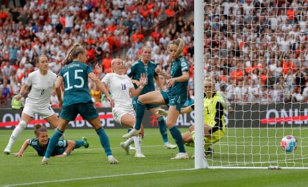Chloe Kelly pokes in the winning goal for England.Photograph: Tom Jenkins/The Guardian
Khiara Keating, watching with her family from the stands, now a member of the Euro 2025 squad: I could have cried. I was speechless. I looked at my mum and was like: “Has that actually just happened?” Then the whole stadium erupted and I thought: “Wow, we’re actually going to do it!”
Kelly: My job is to be there for the drop-downs and to help get the keeper to stay in her goal, and as it dropped to me, I just thought: “Get this in!” Then I was just absolutely buzzing.
Jorge Bronze: Lucy would claim an assist for Chloe’s goal. I think there was at least enough nudging around the box that Lucy’s presence caused some havoc for Chloe to then stick it in. We all basically started crying at that point.
Dilworth: I hugged my dad and I was close to tears. I was just tingly at the fact we were moments away, it was a stunned feeling, of thinking about what this moment was in history for women. The greater meaning was bigger than the game.
O’Sullivan: For these games, as a photographer, you never know which end to sit in is going to be the best end to be at to get the key goal. I was at the wrong end for the Chloe Kelly goal, but it didn’t matter. I was able to get much more of the crowd and much more the reaction. It was one of those games where it felt like things worked out the way they were supposed to work out.
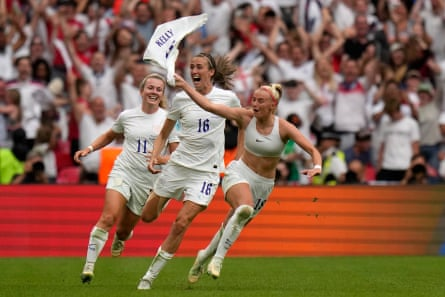Chloe Kelly rips her shirt off as she runs to celebrate the winner.Photograph: Alessandra Tarantino/AP
Cowen: After Chloe Kelly scored, I was certain Germany weren’t coming back. It was just a masterclass by England to keep the ball in the corner. Players like Jill Scott in particular were absolutely brilliant and she had that iconic swearing moment [Her outburst went viral.
Greenwood: I love how we kept the ball in the corner, I loved those bits of the game the most. After the goal, we were so good.
Lucy Bronze: I was like: “Yeah, we’re England. We can see this game out. No problem at all.” I’ve not watched the game back, [but] I remember Chloe shouted at me at one point because she got a yellow card for taking her shirt off. Bear in mind, I played the whole game and she hadn’t, and she was like: “You’re going to have to waste time on the throw-in and get a yellow card because I can’t.” I was like: “You got a yellow card because you scored and I’m going to be the idiot getting a yellow card for wasting time?” I didn’t in the end, but I remember her saying: “You need to waste time for the team. I can’t do it.”
The final whistle and trophy lift prompted an outpouring of emotion as well as reflection how far women’s football had come.
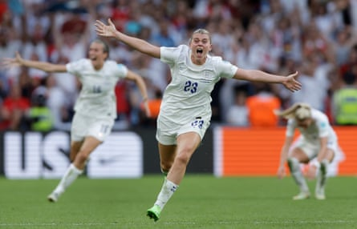Alessia Russo races away at the final whistle.Photograph: Tom Jenkins/The Guardian
Williamson: Seeing everybody’s faces, I felt like I was on that pitch for ever. I’ve watched the game back every year but it’s an out-of-body experience. All we kept saying to each other was: “We did it.” That was the emotion. It was a thing to be done, and we did it.
Jorge Bronze: The tournament felt like the first time in my experience where support for the women felt much more sincere, rather than: “Oh, aren’t the girls doing well?” There was a clear narrative shift, where actually winning the tournament became really important to everybody . That felt like a moment in history. Meanwhile, my son, Freddie, sat with his iPad, headphones on, totally uninterested. He’d done well, it was a hot day, and my poor wife, Charis, had Alzira in a sling, roasting – not ideal. I remember then the prospect of being back on that sodding bus for another hour, but moods were elevated at that point.
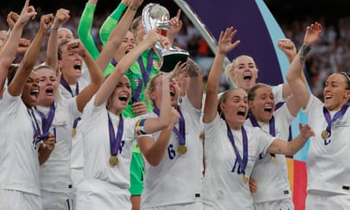The England captain Leah Williamson lifts the trophy at the presentation ceremony.Photograph: Tom Jenkins/The Guardian
Cowen: I’m really proud that it’s my voice on the commentary of it but, because I was so focused on getting it right, I did slightly miss out on the “going berserk”, because it was more of a relief that I hadn’t said anything mad. At the end, I turned to throw to Rachel [Brown-Finnis] for some words and she was just crying. It was a lovely moment, because she, like all the ex-Lionesses, is so supportive and I’m in awe of them; how none of them are bitter that they didn’t have these advantages, the pay players get nowadays, in their time. Instead they’re just so humble and just so proud to have played for England, so I was so pleased for her, in particular.
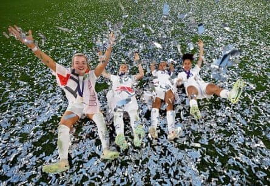Revelling in the moment: (from left) Lauren Hemp, Lucy Bronze, Nikita Parris and Demi Stokes.Photograph: Lynne Cameron/The FA/Getty Images
Downey: I was just a wreck. I was sitting next to a journalist from the men’s game who I think had come in thinking it was just an average day at the office but by the end, as I was sobbing into my hands next to him, he went: “Enjoy this moment, they don’t happen very often,” and he really understood the gravity of it and how much it meant to those of us who have been plugging away in the game for a very long time. Then you have to then go and work, which I found really hard and odd. I had to put the game face on again to do the quotes piece for the Guardian . So I went and sat in Sarina’s press conference and that was absolutely crazy because the players came in, Mary Earps got up on the desk and danced and the players were all singing. Very, very special memories.
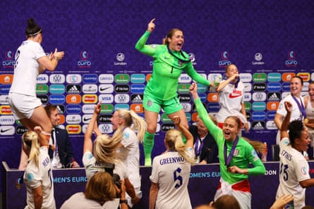Lucy Bronze (left) and Mary Earps dance on the press conference table.Photograph: Sarah Stier/Uefa/Getty Images
Greenwood: The moment the final whistle went, it was like an out-of-body experience. When I recall that game, I think about nothing but the final whistle and that pure relief. I don’t know whether I ran forwards, backwards, maybe I went to Leah first. I have no idea. All I know is it was one of the best moments of my entire life. The stadium sounded incredible.
Celebrations on the night spilled into Trafalgar Square the following day.
Kelly: It was nice to spend time with every family, it was such a special night. The girls created special memories. To do it on home soil was incredible, having all my family in the stands. All my brothers, my sister, my little nephews, my nan, my mum and dad, my now husband Scott, were all there.
Cowen: Back in the Winnebago, it was total euphoria. Fara Williams had somehow managed to procure a bottle of prosecco from somewhere, and she popped the cork inside a very small Winnebago, which probably wasn’t the safest thing. We put on music and danced around for a little bit, before going for some food and a bit to drink, but I had a child at home. In hindsight, I shouldn’t have gone home so early, but even in the moment, I thought: “I want to go home to see my family.” And then, for my sins, I do love a KFC, I only treat myself to one when it’s a really good game and I thought: “Robyn, you deserve it,” so I had chicken and chips around midnight.
The victorious England team take to the stage at Trafalgar Square.Photograph: David Levene/The Guardian
Jorge Bronze: We went into the hotel and waited for the players to arrive and there were crowds of people at the hotel. We stayed there until about 1am. Georgia Stanway got some Maccies [McDonald’s] in, because you’re not allowed to eat shit during the tournament, so the first thing was like: “get some Maccies”. So, I’ve got some great photos of Luce sat with a trophy and Freddie stealing some chips, wearing the medal. I put them [his children Freddie and Alzira] in their car seats to go back to the hotel and they both fell asleep instantly.
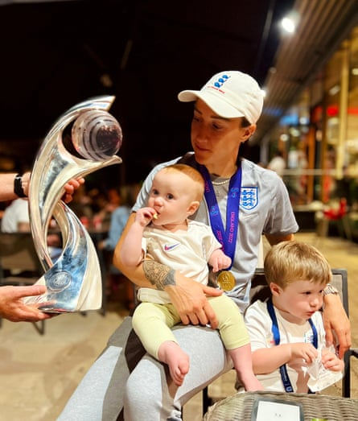Lucy Bronze with her niece and nephew eating McDonald’s with the Euro 2022 trophy and medals.Photograph: Jorge Bronze
Opong: When you get to experience certain moments in life, take it. If you can go, go. They’re once-in-a-lifetime experiences, so I just had to be at the parade in Trafalgar Square . I can’t put it into words. I remember leaving the parade thinking: “I don’t even know what I’ve just witnessed.” Every single one of those women who won the Euros have given so much back to communities. They showed what you can achieve with teamwork and cohesion. They’re such a special unit.
England start their defence of the European Championship against France on Saturday, 5 July.